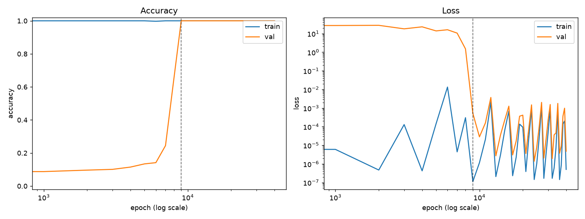
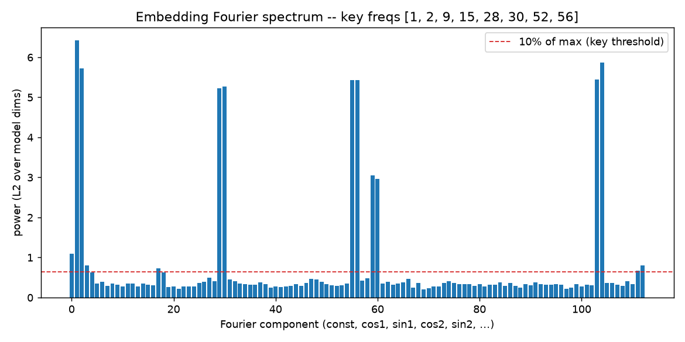
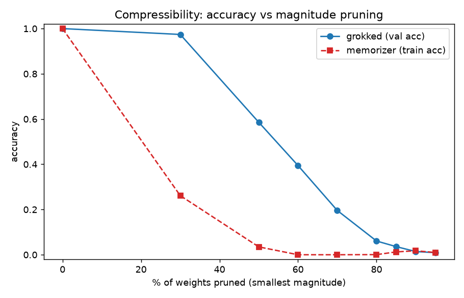
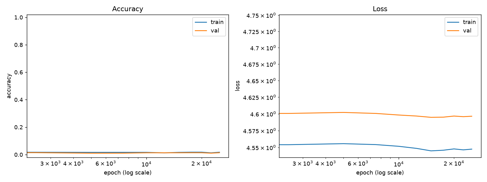
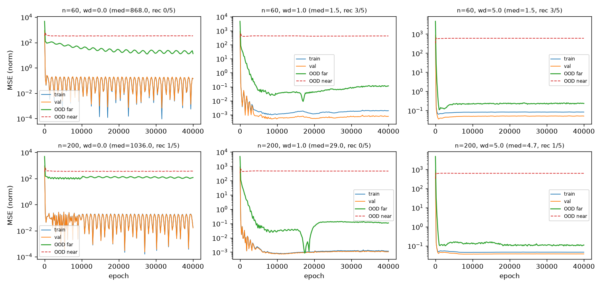
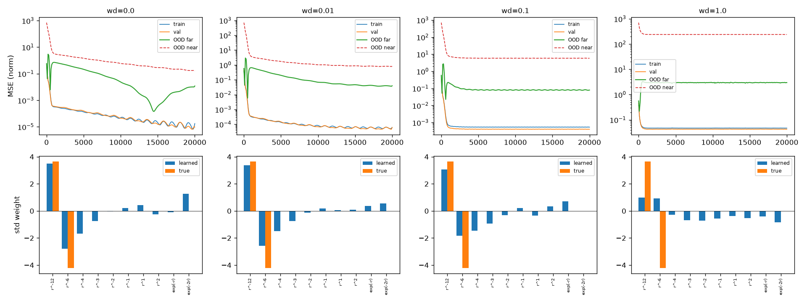
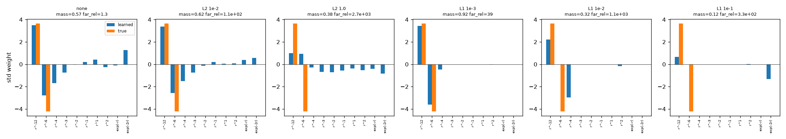

grok.....grok ?
There's a strange thing neural networks sometimes do called grokking. You train a network on some task, and for a long time it looks basically done: the loss on its training data has already hit zero, and nothing seems to be happening. Then, often thousands of steps later, with no warning, its performance on data it hasn't seen suddenly jumps. It goes from failing to almost perfect, quickly, long after you'd have stopped watching.
The question I got stuck on was: when that jump happens, has the network found the actual underlying rule, the real law behind the data? Or has it just found a slightly better guess that happens to work well near the examples it was trained on? Those sound similar but they're not. A model that found the real rule should work anywhere, even far outside the range it was trained on. A model that found a good local guess should fail once you move away from that range. Nobody seemed to have actually tested this directly, and it felt like a real gap: if grokking really does mean "found the true law," that's a big deal for any field where you can't just go measure the thing you're predicting (drug interactions you haven't run, materials that don't exist yet, physics at conditions no lab can reach). If it doesn't, that's worth knowing too.
So that became the plan: pick something with an actual, known ground-truth law, grok a model on it, and then test whether it extrapolates. I called the project Wedge 1.
What I already had lying around
Before starting from scratch, I checked an older project of mine called catapult (named after gwern's LLM catapult hypothesis, which is what got me interested in this whole area in the first place), which had spent a while reproducing grokking on the classic toy example: modular addition. Feed a network pairs of numbers and their sum modulo some prime, hold out a chunk of the pairs, and watch what happens as it trains. It turned out I'd already done a lot more with this than I remembered.

A few things from catapult turned out to matter a lot later. First, weight decay (a training setting that gently penalizes the network for having large internal numbers) wasn't optional here: turn it off and the jump in the figure above never happens at all. Second, I could actually look inside the grokked network and see what it was doing, not just that it worked.

The trick itself is neat. Map each number onto an angle on a circle, and adding two numbers mod p turns into adding two angles. There's a plain trig identity for that:
cos(A + B) = cos(A)cos(B) - sin(A)sin(B)
sin(A + B) = sin(A)cos(B) + cos(A)sin(B)
which a network can compute with nothing more exotic than multiplication and addition. Those sharp spikes in the spectrum are the fingerprint of a network that settled on a small handful of these angles, instead of memorizing every pair by hand.
And when I compared a grokked network against one that had only memorized the training examples, the grokked one was just sturdier in every way I tried to break it.

I even tried to break a grokked solution back down on purpose: crank up weight decay further, remove it entirely partway through, add noise to the labels. None of it worked.

So going in, I had good reason to believe grokking finds something real and stable, at least for this kind of task. What I hadn't tested was the actual question: does that "something real" generalize to inputs way outside the training range. Modular arithmetic doesn't really have an "outside the range," so I needed a different kind of problem to test that.
Building the actual test
For Wedge 1 I switched to physics: functions with a known, exact formula, where I could train a network on one range of inputs and then check its predictions somewhere it had never seen. Lennard-Jones potential was the main one, which describes how atoms attract and repel depending on distance:
V(r) = A / r^12 - B / r^6
Two terms: one repulsive (r^-12, wins up close), one attractive (r^-6,
wins further out), and two positive constants that just set the strength and
scale. I also tried a couple of other shapes for variety, mostly to check
that nothing I found was specific to this one formula.
The plan was simple on paper: train a small neural network to predict the potential from the distance, using weight decay, wait for it to grok, then compare its predictions inside the training range against its predictions outside it. I set the outside-the-range boundaries in advance, before running anything, so I couldn't quietly move the goalposts later if the results looked bad.
Smooth functions don't grok
The first run didn't grok at all. Not "grokked slowly," not "grokked weakly." Nothing like the sudden jump from before ever showed up.
The reason turned out to be almost embarrassingly simple. Grokking is interesting because there's a hard gap between "memorized the training examples" and "found the general rule," and the network sits stuck on the wrong side of that gap for a while before crossing it. Modular addition has that gap: you either know the rule or you're stuck guessing. A smooth physical curve doesn't. If I show a network sixty points sampled from a smooth curve, it can fit a curve that passes near all sixty points almost immediately, using nothing smarter than "connect the dots." There's no hard problem for weight decay to eventually solve, so there's no delayed jump. Training and validation error just went down together, smoothly, from the start, in every setting I tried.
That also meant the plan itself was slightly wrong. I'd been asking "did this network grok yet," but for a smooth function that question doesn't really apply. The question that actually mattered was more direct: does the network's error on the far-outside-the-range points improve late, well after its error on the training range has already flattened out. That's the real signature I was actually looking for, and I hadn't been measuring it directly.
The long, noisy middle
Once I started tracking the outside-the-range error properly, I spent a good while chasing what looked like real signals that turned out to be measurement problems instead. A few examples, because I think the mistakes are more instructive than the parts that worked:
One early "positive" result turned out to be driven by runs where weight decay was set to zero, which makes no sense since weight decay is the entire proposed mechanism. The actual cause was an unstable learning rate making the validation curve jump around, which was fooling a naive "did it improve" detector into counting noise as a signal.
Another run seemed to show the effect appearing and then not appearing, depending on how I averaged two different failure regions together. Lennard- Jones has a smooth, learnable far tail and also a sharp, physically extreme wall close to zero. That near-wall region is essentially impossible to predict from training data that never showed anything like it. Averaging it in with the learnable far region was hiding whatever was actually going on in the part that should have been learnable.
A later run gave a table where adding more training data made the results look worse, which is backwards. That one came down to using a ratio (error near the boundary divided by error inside the training range) instead of a plain error number. With more data, the inside-the-range error got so tiny that even a small outside-the-range error produced a huge ratio, just from the denominator shrinking. The model wasn't doing worse. The yardstick was broken.
Each of these took real time to track down, and each time the fix was the same kind of lesson: measure the thing you actually care about, in units that don't lie to you, and don't trust a result until you've asked why it looks the way it does.
The real answer
Once the metric was fixed (comparing the network's outside-the-range error against how much that region's true values vary, essentially asking "did this beat just predicting the average"), the honest result was clear and not close.

Even in the best setting, the network's predictions outside the training range were roughly 190 times worse than simply guessing the region's average value. No amount of weight decay, however I tuned it, produced a network that had actually recovered the true underlying formula.
The reason is almost mechanical rather than mysterious. A network built from ReLU activations can only ever draw straight-line segments, joined together at kinks. Inside its training window, it can fake a smooth curve by using enough tiny straight segments that you can't see the joints. Outside the window, though, there's no more data telling it where the next kink should go, so it just keeps going in whatever straight line it was already on. The true physical law keeps curving. The network structurally cannot. This isn't a training bug you can fix with a better recipe. It's a property of what that kind of network is.
I did wonder whether a different activation function would sidestep this, and it wouldn't have, for the same underlying reason: smooth alternatives extrapolate as their own shape (flat, wavy, whatever their formula naturally does far from the data), not as the specific shape of Lennard-Jones or any other particular physical law. Fixing this needed a different kind of change entirely.
Changing the question
If the problem is that the network has to invent its own extrapolation shape, the fix is to stop making it invent one. Instead of a free-form network, I built a fixed menu of candidate ingredients, things like different powers of distance and different exponential decay rates, and let a plain linear model choose how much of each ingredient to use:
V(r) = w1*f1(r) + w2*f2(r) + ... + wn*fn(r)
Each f is one menu item (r^-12, r^-6, r^-4, exp(-r), and so on), and
each w is a weight the model is free to learn. The true Lennard-Jones
formula is exactly two of those ingredients: nonzero weight on r^-12 and
r^-6, zero everywhere else. Everything else on the menu is a decoy that only
helps fit the training window without meaning anything.
This turns "did the model find the true law" into a question you can actually answer cleanly: among every combination of ingredients that fits the training data equally well, does training push the model toward the two real ones and away from the decoys, or toward some messy mixture that only happens to work inside the window?
The first result validated the whole idea. With the right ingredients available, the near-wall region (previously unlearnable) got recovered almost exactly, just because the model finally had access to the right shape. But there was a twist I didn't expect.

The true answer here needs w on r^-12 and r^-6 to be genuinely large.
Weight decay's entire job is to discourage large numbers. So the stronger I
turned it up, the harder it pushed against the actual correct answer, shrinking
the true terms and leaking their weight onto decoys instead. The mechanism that
causes grokking on modular addition was actively fighting law-recovery here.
L1 versus L2
Weight decay is what's called an L2 penalty: it spreads a small tax evenly across every number in the model. There's a different kind of penalty, L1, that behaves completely differently: instead of taxing everything a little, it tends to push weak ingredients all the way to zero and leave a few strong ones alone. If the true answer really is "two ingredients, and nothing else matters," L1 seemed like the more honest tool for finding it. So I ran the direct comparison.

This was the clean result I'd been chasing, just not the one I expected. A weak L1 penalty recovered the true law almost perfectly. Weight decay, the specific ingredient responsible for grokking in the first place, did not, at any strength I tried. Push L1 too hard and it also failed, wiping out the true signal along with the decoys, so there's a real sweet spot rather than "more sparsity is always better." But within that sweet spot, sparsity worked and grokking's own mechanism didn't.
So, was it worth it
At some point I asked myself directly whether any of this was actually worth finishing, and I think the honest answer is no, not really, not as originally framed.
The whole premise was "grokking might mean the model found the true law." But by the time I got a clean result, that premise had already quietly stopped being true two pivots earlier: grokking, at least as I'd studied it, is a phenomenon about matching your training distribution well, not about reaching beyond it. The smooth-function experiments never grokked in the first place. What I ended up with, stripped of the physics dressing, is close to a decades- old statistics result: L1 penalties (LASSO) find sparse answers better than L2 penalties (ridge regression) when the true answer actually is sparse. That's real, but it's not new, and recovering a formula after handing the model its exact ingredients in advance isn't genuine scientific discovery either. Tools built specifically for that (symbolic regression methods that search for a formula without being told its shape ahead of time) already do the real version of this, and do it better.
What I do think was worth keeping is the actual path there, and specifically the parts that were wrong at first. Overparameterizing a model isn't enough by itself to cause grokking. Grokking, at least in every case I tested it, is about generalizing within your training distribution, not about extrapolating past it. A ReLU network structurally cannot bend the way a real curved law bends outside its training data, no matter how you train it. And a metric that measures relative error can quietly lie to you the moment your target region is nearly flat. Those are small, useful things to actually know, and I wouldn't have known any of them without running into each one directly.
One loose end, left exactly as it is: I'd written an improved version of the L1-versus-L2 comparison, with a cleaner error metric and a finer sweep around the sparsity sweet spot, but never got around to actually running it before deciding to close the project. The result above stands on the coarser run. That's a real gap, not a rounding error, and I'd rather say so than quietly smooth it over.
Mostly, though, the useful part of this whole detour was just noticing the premise had failed, and stopping instead of grinding on. That's a less satisfying ending than a paper. It's still the right one.
Further reading
gwern.net/llm-catapult: the original hypothesis this whole detour, and catapult's name, borrows from.